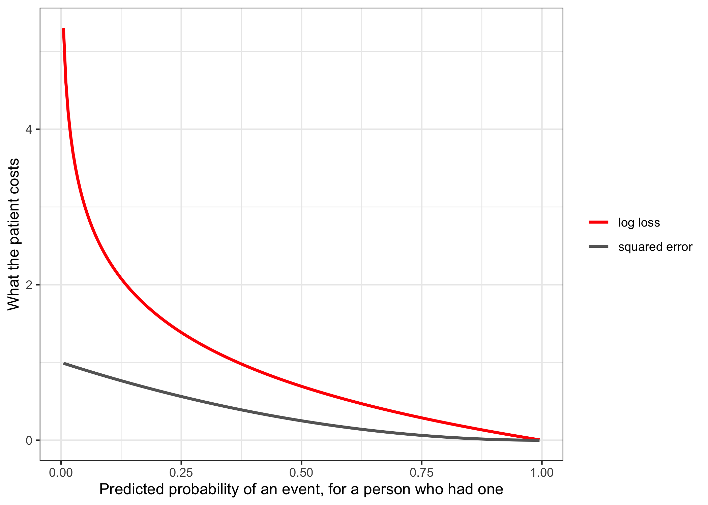
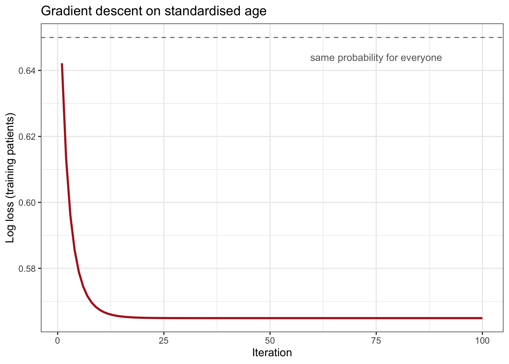
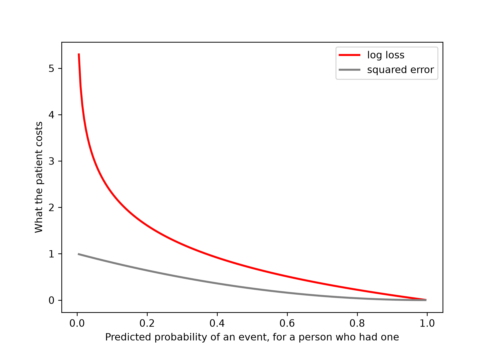
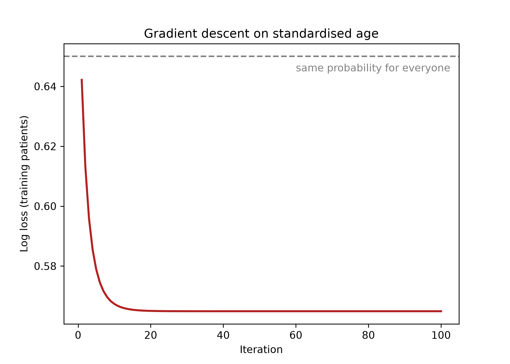

# Packages for this exercise. If one is missing, remove the # and run this line once:
# install.packages(c("tidyverse", "tidymodels"))
library(tidyverse)
library(tidymodels)
theme_set(theme_bw())Exercise 4.5 — Fitting logistic regression: gradient descent on the log loss
In Exercise 3.4 you fitted a linear regression yourself: start with both coefficients at 0, measure which way is downhill on the MSE, take a step, repeat. How does glm() or LogisticRegression() find −5.638 and 0.0832 for the age model of Exercise 4.1? The same way, with one change: a different loss.
- Part 1. The log loss: what one patient costs the model, and why it is not the MSE.
- Part 2. Gradient descent on the log loss, with the code from Exercise 3.4. On raw age it does not finish; standardise, and it lands on the same coefficients as
glm()andLogisticRegression().
NoteThe plots are for looking at
The code for the plots is folded away under Code for this plot (optional). You do not need to write it, but it is in the download if you want it.
Download this exercise as an R Markdown notebook (.Rmd): the text and every code cell of the R version, including the code for the plots, with the blanks left for you to fill in. Open it in RStudio and run it a chunk at a time.
Packages and data
The same 750 people and the same split as in Exercise 4.1. For the loss we need the outcome as a number: 1 for yes, 0 for no.
cvd <- read_csv("data/cvd_risk.csv") |>
mutate(cvd = factor(cvd, levels = c("no", "yes")))
test_rows <- seq(1, nrow(cvd), by = 5) # every fifth person is held back
train <- cvd[-test_rows, ]
x <- train$age # the predictor
y <- as.numeric(train$cvd == "yes") # the outcome: 1 = yes, 0 = noThe answer to compare with, from glm():
glm_fit <- logistic_reg() |>
set_engine("glm") |>
set_mode("classification") |>
fit(cvd ~ age, data = train)
glm_fit$fit$coefficients#> (Intercept) age
#> -5.63801930 0.08321885Part 1 — The log loss
A logistic regression predicts a probability \(p\) of an event for each person. How much should a patient cost the model?
- If the person had an event (\(y = 1\)), the model should have given a high \(p\). The loss is \(-\log(p)\).
- If the patient does not (\(y = 0\)), it should have given a low \(p\). The loss is \(-\log(1 - p)\).
Both cases in one formula, averaged over the patients, is the log loss (also called cross-entropy):
\[\text{log loss} = -\frac{1}{n}\sum_{i=1}^{n} \Big[\, y_i \log(p_i) + (1 - y_i)\log(1 - p_i) \,\Big]\]
For each patient only one of the two terms is switched on: \(y_i\) or \(1 - y_i\) is 0.
For a person who had an event, here is what the log loss and the squared error \((1 - p)^2\) charge for four predictions:
data.frame(p = c(0.9, 0.5, 0.1, 0.01)) |>
mutate(log_loss = -log(p),
squared_error = (1 - p)^2)#> p log_loss squared_error
#> 1 0.90 0.1053605 0.0100
#> 2 0.50 0.6931472 0.2500
#> 3 0.10 2.3025851 0.8100
#> 4 0.01 4.6051702 0.9801Code for this plot (optional)
data.frame(p = seq(0.005, 0.995, by = 0.005)) |>
mutate(`log loss` = -log(p), `squared error` = (1 - p)^2) |>
pivot_longer(-p, names_to = "loss", values_to = "cost") |>
ggplot(aes(x = p, y = cost, colour = loss)) +
geom_line(linewidth = 1) +
scale_colour_manual(values = c("log loss" = "red", "squared error" = "grey40")) +
labs(x = "Predicted probability of an event, for a person who had one",
y = "What the patient costs", colour = NULL)
NoteWhy not the MSE?
The squared error of a probability can never be more than 1, however wrong the model is: a confident 0.01 for a person who had an event costs 0.98, hardly more than an unsure 0.1 (0.81). The log loss charges 4.6 for the first and 2.3 for the second, so confident mistakes are what the model works hardest to avoid. And once the probability goes through the S-curve, the MSE over the two coefficients is no longer a single bowl, while the log loss is. Minimising the log loss is also exactly what statisticians call maximum likelihood, which is what glm() does.
Task 1a — The log loss of a model
Complete the function, then use it on two models: glm()’s, and a model that gives every patient the same probability, the 35.5% of training patients who had an event.
# Replace every ______ below, then run this cell.
log_loss <- function(y, p) {
-mean(y * log(p) + (1 - y) * log(______))
}
p_glm <- predict(glm_fit, new_data = train, type = "prob")$.pred_yes
p_same <- rep(mean(y), length(y))
c(glm = log_loss(y, p_glm), same_for_everyone = log_loss(y, p_same))
TipStuck?
For a person without an event the loss is the log of the probability of not having one.
Part 2 — Gradient descent on the log loss
The update rule is the one from Exercise 3.4: move each coefficient against the derivative of the loss with respect to that coefficient, scaled by the learning rate \(\alpha\). For the log loss the two derivatives are
\[\frac{\partial\,\text{log loss}}{\partial \beta_0} = \frac{1}{n}\sum (p_i - y_i) \qquad \frac{\partial\,\text{log loss}}{\partial \beta_1} = \frac{1}{n}\sum (p_i - y_i)\, x_i\]
with \(p_i = 1 / \big(1 + e^{-(\beta_0 + \beta_1 x_i)}\big)\). Compare them with the MSE derivatives of Exercise 3.4, \(-\frac{2}{n}\sum r_i\) and \(-\frac{2}{n}\sum x_i r_i\) with \(r_i = y_i - \hat{y}_i\): the same shape, the gap between what happened and what was predicted, with the prediction now a probability.
So the code of Exercise 3.4 changes in one place: the prediction goes through the S-curve.
Task 2a — The prediction line
# Replace every ______ below, then run this cell.
descend_log_loss <- function(x, y, alpha, n) {
b0 <- 0; b1 <- 0
loss <- numeric(n)
for (i in seq_len(n)) {
p <- 1 / (1 + exp(-(______))) # the predicted probability
b0 <- b0 - alpha * mean(p - y)
b1 <- b1 - alpha * mean((p - y) * x)
loss[i] <- log_loss(y, 1 / (1 + exp(-(b0 + b1 * x))))
}
list(b0 = b0, b1 = b1, loss = loss)
}
raw <- descend_log_loss(x, y, alpha = 1e-3, n = 1000)
c(intercept = raw$b0, slope = raw$b1, log_loss = tail(raw$loss, 1))
TipStuck?
Inside the brackets goes the straight line on the log-odds scale, with the current coefficients.
After a thousand iterations the descent reports an intercept of −0.040 and a slope of −0.007, with a log loss of 0.669. glm() gives −5.638 and 0.0832, with a log loss of 0.565. The slope even has the wrong sign.
The same problem as in Exercise 3.4. Both coefficients start at 0, which gives every patient a probability of 0.5. The quickest way to lower the loss from there is to bring everyone’s probability down towards 36%. The derivative for the slope is multiplied by age, about 59 on average, so the slope reacts about 60 times faster than the intercept and is pushed below 0 to do that job. The learning rate must be small enough for the slope not to overshoot, and at that rate the intercept crawls towards −5.6: after 100,000 iterations it has reached only −2.8. Make the learning rate ten times larger (\(10^{-2}\)) and the loss goes up instead of down.
Task 2b — Standardise, descend, convert back
The fix is the one from Exercise 3.4: standardise age, descend, and convert the coefficients back. Only the predictor is standardised; the outcome is 0 or 1 and stays as it is.
# Replace every ______ below, then run this cell.
z <- (x - mean(x)) / ______
std <- descend_log_loss(z, y, alpha = 1, n = 100)
slope <- std$b1 / sd(x)
intercept <- std$b0 - slope * mean(x)
c(intercept = intercept, slope = slope)
glm_fit$fit$coefficients # the answer to compare with
TipStuck?
Standardising means subtracting the mean and dividing by the standard deviation.
TipHow the conversion back works
On the standardised scale age is measured in standard deviations (SDs). The descent finds a slope of 0.941: one SD more age adds 0.941 to the log-odds. One SD of age is 11.3 years, so one year adds 0.941 / 11.3 = 0.0832. That is the line slope <- std$b1 / sd(x).
The standardised intercept, −0.716, is the log-odds of a person of the average age, 59.1 years. To get the log-odds at an age of 0, go back 59.1 years along the slope: −0.716 − 0.0832 × 59.1 = −5.63. That is the line intercept <- std$b0 - slope * mean(x).
Code for this plot (optional)
std_curve <- descend_log_loss((x - mean(x)) / sd(x), y, alpha = 1, n = 100)
data.frame(iteration = 1:100, log_loss = std_curve$loss) |>
ggplot(aes(x = iteration, y = log_loss)) +
geom_line(colour = "firebrick", linewidth = 1) +
geom_hline(yintercept = 0.650, linetype = "dashed", colour = "grey50") +
annotate("text", x = 75, y = 0.644, label = "same probability for everyone",
colour = "grey40", size = 3.5) +
labs(x = "Iteration", y = "Log loss (training patients)",
title = "Gradient descent on standardised age")
glm() itself does not use plain gradient descent. It uses a version of Newton’s method, which also measures how the slope of the loss is changing and takes much bigger, better-aimed steps. It needs only a handful of iterations:
glm_fit$fit$iter#> [1] 3
ImportantReflection
- Linear regression has a formula for its coefficients (the extra reading at the end of Day 3). Logistic regression does not. What does that mean for how every logistic regression is fitted?
- Both losses compare what happened with what was predicted. What is the main difference in how they treat a confident wrong prediction?
ImportantLearning points
- Logistic regression is fitted by minimising the log loss: \(-\log(p)\) for a patient with the outcome, \(-\log(1-p)\) for one without.
- The log loss is a single bowl, so gradient descent works, with derivatives of the same shape as for the MSE: the mean of \((p - y)\), and of \((p - y)\) times the predictor.
- As in Exercise 3.4, unscaled predictors make the descent stop far from the answer; standardise first, then convert back.
- There is no formula for the coefficients: every logistic regression is found by an iterative algorithm, which is why it can fail to converge.
Download this exercise as a Jupyter notebook (.ipynb): the text and every code cell of the Python version, including the code for the plots, with the blanks left for you to fill in. Open it in Jupyter or VS Code and run it a cell at a time.
Packages and data
# Packages for this exercise. If one is missing, install it once from a terminal
# (in a Jupyter notebook, type %pip instead of pip):
# pip install pandas numpy matplotlib scikit-learn
import pandas as pd
import numpy as np
import matplotlib.pyplot as plt
from sklearn.linear_model import LogisticRegressionThe same 750 people and the same split as in Exercise 4.1. For the loss we need the outcome as a number: 1 for yes, 0 for no.
cvd = pd.read_csv("data/cvd_risk.csv")
is_test = cvd.index % 5 == 0 # every fifth person is held back
train = cvd[~is_test]
x = train["age"].to_numpy() # the predictor
y = (train["cvd"] == "yes").astype(int).to_numpy() # the outcome: 1 = yes, 0 = noThe answer to compare with, from scikit-learn:
sk_model = LogisticRegression(C=np.inf)
sk_model.fit(train[["age"]], train["cvd"])LogisticRegression(C=inf)In a Jupyter environment, please rerun this cell to show the HTML representation or trust the notebook.
On GitHub, the HTML representation is unable to render, please try loading this page with nbviewer.org.
Parameters
Fitted attributes
print("intercept:", sk_model.intercept_, " slope:", sk_model.coef_)#> intercept: [-5.63802661] slope: [[0.08321897]]Part 1 — The log loss
A logistic regression predicts a probability \(p\) of an event for each person. How much should a patient cost the model?
- If the person had an event (\(y = 1\)), the model should have given a high \(p\). The loss is \(-\log(p)\).
- If the patient does not (\(y = 0\)), it should have given a low \(p\). The loss is \(-\log(1 - p)\).
Both cases in one formula, averaged over the patients, is the log loss (also called cross-entropy):
\[\text{log loss} = -\frac{1}{n}\sum_{i=1}^{n} \Big[\, y_i \log(p_i) + (1 - y_i)\log(1 - p_i) \,\Big]\]
For each patient only one of the two terms is switched on: \(y_i\) or \(1 - y_i\) is 0.
For a person who had an event, here is what the log loss and the squared error \((1 - p)^2\) charge for four predictions:
p = np.array([0.9, 0.5, 0.1, 0.01])
pd.DataFrame({"p": p, "log_loss": -np.log(p), "squared_error": (1 - p) ** 2})#> p log_loss squared_error
#> 0 0.90 0.105361 0.0100
#> 1 0.50 0.693147 0.2500
#> 2 0.10 2.302585 0.8100
#> 3 0.01 4.605170 0.9801Code for this plot (optional)
p_grid = np.arange(0.005, 1, 0.005)
fig, ax = plt.subplots()
ax.plot(p_grid, -np.log(p_grid), color="red", linewidth=2, label="log loss")
ax.plot(p_grid, (1 - p_grid) ** 2, color="grey", linewidth=2, label="squared error")
ax.set_xlabel("Predicted probability of an event, for a person who had one")
ax.set_ylabel("What the patient costs")
ax.legend()
plt.show()
NoteWhy not the MSE?
The squared error of a probability can never be more than 1, however wrong the model is: a confident 0.01 for a person who had an event costs 0.98, hardly more than an unsure 0.1 (0.81). The log loss charges 4.6 for the first and 2.3 for the second, so confident mistakes are what the model works hardest to avoid. And once the probability goes through the S-curve, the MSE over the two coefficients is no longer a single bowl, while the log loss is. Minimising the log loss is also exactly what statisticians call maximum likelihood.
Task 1a — The log loss of a model
Complete the function, then use it on two models: scikit-learn’s, and a model that gives every patient the same probability, the 35.5% of training patients who had an event.
# Replace every ______ below, then run this cell.
def log_loss(y, p):
return -np.mean(y * np.log(p) + (1 - y) * np.log(______))
p_sk = sk_model.predict_proba(train[["age"]])[:, 1]
p_same = np.full(len(y), y.mean())
print("scikit-learn: ", log_loss(y, p_sk))
print("same for everyone:", log_loss(y, p_same))
TipStuck?
For a person without an event the loss is the log of the probability of not having one.
Part 2 — Gradient descent on the log loss
The update rule is the one from Exercise 3.4: move each coefficient against the derivative of the loss with respect to that coefficient, scaled by the learning rate \(\alpha\). For the log loss the two derivatives are
\[\frac{\partial\,\text{log loss}}{\partial \beta_0} = \frac{1}{n}\sum (p_i - y_i) \qquad \frac{\partial\,\text{log loss}}{\partial \beta_1} = \frac{1}{n}\sum (p_i - y_i)\, x_i\]
with \(p_i = 1 / \big(1 + e^{-(\beta_0 + \beta_1 x_i)}\big)\). Compare them with the MSE derivatives of Exercise 3.4, \(-\frac{2}{n}\sum r_i\) and \(-\frac{2}{n}\sum x_i r_i\) with \(r_i = y_i - \hat{y}_i\): the same shape, the gap between what happened and what was predicted, with the prediction now a probability.
So the code of Exercise 3.4 changes in one place: the prediction goes through the S-curve.
Task 2a — The prediction line
# Replace every ______ below, then run this cell.
def descend_log_loss(x, y, alpha, n):
b0, b1 = 0.0, 0.0
loss = np.zeros(n)
for i in range(n):
p = 1 / (1 + np.exp(-(______))) # the predicted probability
b0 = b0 - alpha * np.mean(p - y)
b1 = b1 - alpha * np.mean((p - y) * x)
loss[i] = log_loss(y, 1 / (1 + np.exp(-(b0 + b1 * x))))
return {"b0": b0, "b1": b1, "loss": loss}
raw = descend_log_loss(x, y, alpha=1e-3, n=1000)
print("intercept:", raw["b0"], " slope:", raw["b1"], " log loss:", raw["loss"][-1])
TipStuck?
Inside the brackets goes the straight line on the log-odds scale, with the current coefficients.
After a thousand iterations the descent reports an intercept of −0.040 and a slope of −0.007, with a log loss of 0.669. scikit-learn gives −5.638 and 0.0832, with a log loss of 0.565. The slope even has the wrong sign.
The same problem as in Exercise 3.4. Both coefficients start at 0, which gives every patient a probability of 0.5. The quickest way to lower the loss from there is to bring everyone’s probability down towards 36%. The derivative for the slope is multiplied by age, about 59 on average, so the slope reacts about 60 times faster than the intercept and is pushed below 0 to do that job. The learning rate must be small enough for the slope not to overshoot, and at that rate the intercept crawls towards −5.6: after 100,000 iterations it has reached only −2.8. Make the learning rate ten times larger (\(10^{-2}\)) and the loss goes up instead of down.
Task 2b — Standardise, descend, convert back
The fix is the one from Exercise 3.4: standardise age, descend, and convert the coefficients back. Only the predictor is standardised; the outcome is 0 or 1 and stays as it is.
# Replace every ______ below, then run this cell.
mx, sx = x.mean(), x.std(ddof=1)
z = (x - mx) / ______
std = descend_log_loss(z, y, alpha=1, n=100)
slope = std["b1"] / sx
intercept = std["b0"] - slope * mx
print(intercept, slope)
print(sk_model.intercept_, sk_model.coef_) # the answer to compare with
TipStuck?
Standardising means subtracting the mean and dividing by the standard deviation, which is already stored in sx.
TipHow the conversion back works
On the standardised scale age is measured in standard deviations (SDs). The descent finds a slope of 0.941: one SD more age adds 0.941 to the log-odds. One SD of age is 11.3 years, so one year adds 0.941 / 11.3 = 0.0832. That is the line slope = std["b1"] / sx.
The standardised intercept, −0.716, is the log-odds of a person of the average age, 59.1 years. To get the log-odds at an age of 0, go back 59.1 years along the slope: −0.716 − 0.0832 × 59.1 = −5.63. That is the line intercept = std["b0"] - slope * mx.
Code for this plot (optional)
std_curve = descend_log_loss((x - x.mean()) / x.std(ddof=1), y, alpha=1, n=100)
fig, ax = plt.subplots()
ax.plot(np.arange(1, 101), std_curve["loss"], color="firebrick", linewidth=2)
ax.axhline(0.650, linestyle="--", color="grey")
ax.text(60, 0.645, "same probability for everyone", color="grey")
ax.set_xlabel("Iteration")
ax.set_ylabel("Log loss (training patients)")
ax.set_title("Gradient descent on standardised age")
plt.show()
scikit-learn does not use plain gradient descent either. Its default solver, lbfgs, also estimates how the slope of the loss is changing and takes bigger, better-aimed steps. It needs fewer iterations:
sk_model.n_iter_#> array([19], dtype=int32)
ImportantReflection
- Linear regression has a formula for its coefficients (the extra reading at the end of Day 3). Logistic regression does not. What does that mean for how every logistic regression is fitted?
- Both losses compare what happened with what was predicted. What is the main difference in how they treat a confident wrong prediction?
ImportantLearning points
- Logistic regression is fitted by minimising the log loss: \(-\log(p)\) for a patient with the outcome, \(-\log(1-p)\) for one without.
- The log loss is a single bowl, so gradient descent works, with derivatives of the same shape as for the MSE: the mean of \((p - y)\), and of \((p - y)\) times the predictor.
- As in Exercise 3.4, unscaled predictors make the descent stop far from the answer; standardise first, then convert back.
- There is no formula for the coefficients: every logistic regression is found by an iterative algorithm, which is why it can fail to converge.